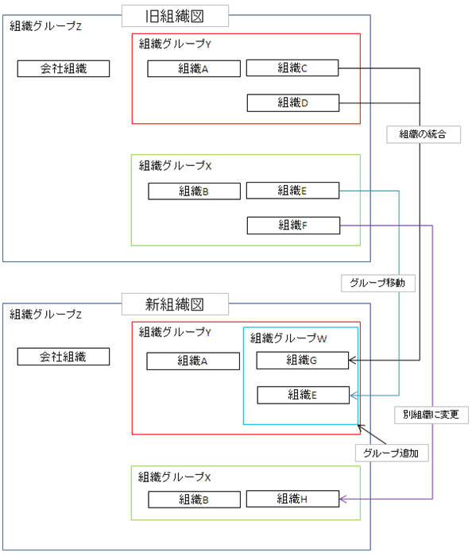
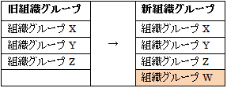
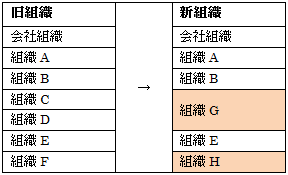
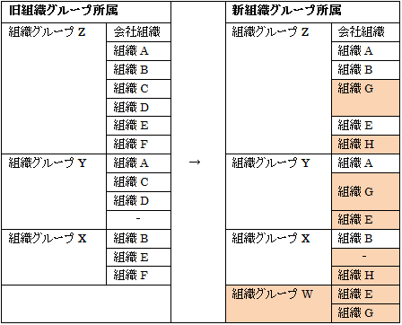

3.2. 新旧移行表の作成¶
組織変更をスムーズに実施するため、新旧の組織の移行表を作成します。
3.2.1. 実行手順¶
新しい組織・組織グループの名称、組織グループの構造、組織グループに所属する組織、本店・支店の区分を権限/集計単位も考慮し事前に決定します。
決まったフォーマットはありませんが、以下に例を示します。
組織が以下のように変更される場合

変更内容：
組織CとDを新組織Gに統合する。（複数の組織の統合（新組織に統合））
組織Eを、組織グループXから組織グループY配下に移動する。（組織が組織グループを移動する）
組織GとEを包含する組織グループWを追加する。（組織グループの新設）
組織グループX配下に、新組織Hを追加する。（組織の新設）
組織Fを削除し、残高を組織Hに移行する。（組織の廃止）
この場合、組織グループ、組織、組織グループ所属の新旧移行表は、それぞれ以下のようになります。
組織グループ

組織

組織グループ所属

3.2.2. 完了条件¶
新旧移行表の作成が完了したことを確認します。